- Что такое степень?
- Возведение в степень числа 10
- Представление чисел 10, 100, 1000 в виде степени с основанием 10
- Возведение в степень отрицательного числа
- Нахождение значений выражений
- Тождественные преобразования степеней
- Задания для самостоятельного решения
Что такое степень?
Степенью называют произведение из нескольких одинаковых множителей. Например:
\[2 \times 2 \times 2\]
Значение данного выражения равно 8
\[2 \times 2 \times 2 = 8\]
Левую часть этого равенства можно сделать короче – сначала записать повторяющийся множитель и указать над ним сколько раз он повторяется. Повторяющийся множитель в данном случае это 2. Повторяется он три раза. Поэтому над двойкой записываем тройку:
23 = 8
Это выражение читается так: «два в третьей степени равно восемь» или «третья степень числа 2 равна 8».
Короткую форму записи перемножения одинаковых множителей используют чаще. Поэтому надо помнить, что если над каким-то числом надписано другое число, то это есть перемножение нескольких одинаковых множителей.
Например, если дано выражение 53, то следует иметь ввиду, что это выражение равносильно записи 5 × 5 × 5.
Число, которое повторяется называют основанием степени. В выражении 53 основанием степени является число 5.
А число, которое надписано над числом 5 называют показателем степени. В выражении 53 показателем степени является число 3. Показатель степени показывает сколько раз повторяется основание степени. В нашем случае основание 5 повторяется три раза
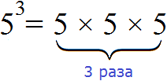
Саму операцию перемножения одинаковых множителей называют возведением в степень.
Например, если нужно найти произведение из четырёх одинаковых множителей, каждый из которых равен 2, то говорят, что число 2 возводится в четвёртую степень:
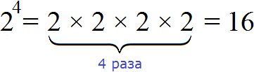
Видим, что число 2 в четвёртой степени есть число 16.
Отметим, что в данном уроке мы рассматриваем степени с натуральным показателем. Это вид степени, показателем которой является натуральное число. Напомним, что натуральными называют целые числа, которые больше нуля. Например, 1, 2, 3 и так далее.
Вообще, определение степени с натуральным показателем выглядит следующим образом:
Степень числа a с натуральным показателем n — это выражение вида an, которое равно произведению n множителей, каждый из которых равен a
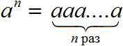
Примеры:
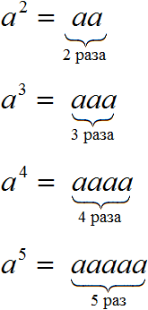
Следует быть внимательным при возведении числа в степень. Часто по невнимательности человек умножает основание степени на показатель.
Например, число 5 во второй степени есть произведение двух множителей каждый из которых равен 5. Это произведение равно 25
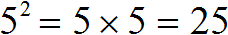
Теперь представим, что мы по невнимательности умножили основание 5 на показатель 2
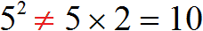
Получилась ошибка, поскольку число 5 во второй степени не равно 10.
Дополнительно следует упомянуть, что степень числа с показателем 1, есть само это число:
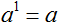
Например, число 5 в первой степени есть само число 5
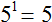
Соответственно, если у числа отсутствует показатель, то надо считать, что показатель равен единице.
Например, числа 1, 2, 3 даны без показателя, поэтому их показатели будут равны единице. Каждое из этих чисел можно записать с показателем 1
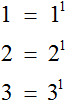
А если возвести 0 в какую-нибудь степень, то получится 0. Действительно, сколько бы раз ничего не умножалось на само себя получится ничего. Примеры:
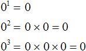
А выражение 00 не имеет смысла. Но в некоторых разделах математики, в частности анализе и теории множеств, выражение 00 может иметь смысл.
Для тренировки решим несколько примеров на возведение чисел в степени.
Пример 1. Возвести число 3 во вторую степень.
Число 3 во второй степени это произведение двух множителей, каждый из которых равен 3
32 = 3 × 3 = 9
Пример 2. Возвести число 2 в четвертую степень.
Число 2 в четвертой степени это произведение четырёх множителей, каждый из которых равен 2
24 =2 × 2 × 2 × 2 = 16
Пример 3. Возвести число 2 в третью степень.
Число 2 в третьей степени это произведение трёх множителей, каждый из которых равен 2
23 =2 × 2 × 2 = 8
Возведение в степень числа 10
Чтобы возвести в степень число 10, достаточно дописать после единицы количество нулей, равное показателю степени.
Например, возведем число 10 во вторую степень. Сначала запишем само число 10 и в качестве показателя укажем число 2
102
Теперь ставим знак равенства, записываем единицу и после этой единицы записываем два нуля, поскольку количество нулей должно быть равно показателю степени
102 = 100
Значит, число 10 во второй степени это число 100. Связано это с тем, что число 10 во второй степени это произведение двух множителей, каждый из которых равен 10
102 = 10 × 10 = 100
Пример 2. Возведём число 10 в третью степень.
В данном случае после единицы будут стоять три нуля:
103 = 1000
Пример 3. Возведем число 10 в четвёртую степень.
В данном случае после единицы будут стоять четыре нуля:
104 = 10000
Пример 4. Возведем число 10 в первую степень.
В данном случае после единицы будет стоять один нуль:
101 = 10
Представление чисел 10, 100, 1000 в виде степени с основанием 10
Чтобы представить числа 10, 100, 1000 и 10000 в виде степени с основанием 10, нужно записать основание 10, и в качестве показателя указать число, равное количеству нулей исходного числа.
Представим число 10 в виде степени с основанием 10. Видим, что в нём один нуль. Значит, число 10 в виде степени с основанием 10 будет представлено как 101
10 = 101
Пример 2. Представим число 100 в виде степени основанием 10. Видим, что число 100 содержит два нуля. Значит, число 100 в виде степени с основанием 10 будет представлено как 102
100 = 102
Пример 3. Представим число 1 000 в виде степени с основанием 10.
1 000 = 103
Пример 4. Представим число 10 000 в виде степени с основанием 10.
10 000 = 104
Возведение в степень отрицательного числа
При возведении в степень отрицательного числа, его обязательно нужно заключить в скобки.
Например, возведём отрицательное число −2 во вторую степень. Число −2 во второй степени это произведение двух множителей, каждый из которых равен (−2)
(−2)2 = (−2) × (−2) = 4
Если бы мы не заключили в скобки число −2, то получилось бы что мы вычисляем выражение −22, которое не равно 4. Выражение −2² будет равно −4. Чтобы понять почему, коснёмся некоторых моментов.
Когда мы ставим перед положительным числом минус, мы тем самым выполняем операцию взятия противоположного значения.
Допустим, дано число 2, и нужно найти его противоположное число. Мы знаем, что противоположное числу 2 это число −2. Иными словами, чтобы найти противоположное число для 2, достаточно поставить минус перед этим числом. Вставка минуса перед числом уже считается в математике полноценной операцией. Эту операцию, как было указано выше, называют операцией взятия противоположного значения.
В случае с выражением −22 происходит две операции: операция взятия противоположного значения и возведение в степень. Возведение в степень является более приоритетной операцией, чем взятие противоположного значения.
Поэтому выражение −22 вычисляется в два этапа. Сначала выполняется операция возведения в степень. В данном случае во вторую степень было возведено положительное число 2
Затем выполнилось взятие противоположного значения. Это противоположное значение было найдено для значения 4. А противоположное значение для 4 это −4
−22 = −4
Скобки же имеют самый высокий приоритет выполнения. Поэтому в случае вычисления выражения (−2)2 сначала выполняется взятие противоположного значения, а затем во вторую степень возводится отрицательное число −2. В результате получается положительный ответ 4, поскольку произведение отрицательных чисел есть положительное число.
Пример 2. Возвести число −2 в третью степень.
Число −2 в третьей степени это произведение трёх множителей, каждый из которых равен (−2)
(−2)3 = (−2) × (−2) × (−2) = −8
Пример 3. Возвести число −2 в четвёртую степень.
Число −2 в четвёртой степени это произведение четырёх множителей, каждый из которых равен (−2)
(−2)4 = (−2) × (−2) × (−2) × (−2) = 16
Легко заметить, что при возведении в степень отрицательного числа может получиться либо положительный ответ либо отрицательный. Знак ответа зависит от показателя исходной степени.
Если показатель степени чётный, то ответ будет положительным. Если показатель степени нечётный, ответ будет отрицательным. Покажем это на примере числа −3
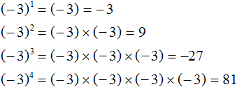
В первом и в третьем случае показатель был нечётным числом, поэтому ответ стал отрицательным.
Во втором и в четвёртом случае показатель был чётным числом, поэтому ответ стал положительным.
Пример 7. Возвести число −5 в третью степень.
Число −5 в третьей степени это произведение трёх множителей каждый из которых равен −5. Показатель 3 является нечётным числом, поэтому мы заранее можем сказать, что ответ будет отрицательным:
(−5)3 = (−5) × (−5) × (−5) = −125
Пример 8. Возвести число −4 в четвёртую степень.
Число −4 в четвёртой степени это произведение четырёх множителей, каждый из которых равен −4. При этом показатель 4 является чётным, поэтому мы заранее можем сказать, что ответ будет положительным:
(−4)4 = (−4) × (−4) × (−4) × (−4) = 256
Нахождение значений выражений
При нахождении значений выражений, не содержащих скобки, возведение в степень будет выполняться в первую очередь, далее умножение и деление в порядке их следования, а затем сложение и вычитание в порядке их следования.
Пример 1. Найти значение выражения 2 + 52
Сначала выполняется возведение в степень. В данном случае во вторую степень возводится число 5 — получается 25. Затем этот результат складывается с числом 2
2 + 52 = 2 + 25 = 27
Пример 10. Найти значение выражения −62 × (−12)
Сначала выполняется возведение в степень. Заметим, что число −6 не взято в скобки, поэтому во вторую степень будет возведено число 6, затем перед результатом будет поставлен минус:
−62 × (−12) = −36 × (−12)
Завершаем пример, умножив −36 на (−12)
−62 × (−12) = −36 × (−12) = 432
Пример 11. Найти значение выражения −3 × 22
Сначала выполняется возведение в степень. Затем полученный результат перемножается с числом −3
−3 × 22 = −3 × 4 = −12
Если выражение содержит скобки, то сначала нужно выполнить действия в этих скобках, далее возведение в степень, затем умножение и деление, а затем сложение и вычитание.
Пример 12. Найти значение выражения (32 + 1 × 3) − 15 + 5
Сначала выполняем действия в скобках. Внутри скобок применяем ранее изученные правила, а именно сначала возводим во вторую степень число 3, затем выполняем умножение 1 × 3, затем складываем результаты возведения в степень числа 3 и умножения 1 × 3. Далее выполняется вычитание и сложение в порядке их следования. Расставим такой порядок выполнения действия над исходным выражением:
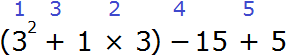
(32 + 1 × 3) − 15 + 5 = 12 − 15 + 5 = 2
Пример 13. Найти значение выражения 2 × 53 + 5 × 23
Сначала возведем числа в степени, затем выполним умножение и сложим полученные результаты:
2 × 53 + 5 × 23 = 2 × 125 + 5 × 8 = 250 + 40 = 290
Тождественные преобразования степеней
Над степенями можно выполнять различные тождественные преобразования, тем самым упрощая их.
Допустим, потребовалось вычислить выражение (23)2. В данном примере два в третьей степени возводится во вторую степень. Иными словами, степень возводится в другую степень.
(23)2 это произведение двух степеней, каждая из которых равна 23
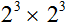
При этом каждая из этих степеней является произведением трёх множителей, каждый из которых равен 2
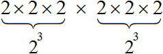
Получили произведение 2 × 2 × 2 × 2 × 2 × 2, которое равно 64. Значит значение выражения (23)2 или равно 64
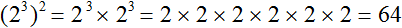
Этот пример можно значительно упростить. Для этого показатели выражения (23)2 можно перемножить и записать это произведение над основанием 2
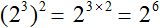
Получили 26. Два в шестой степени это произведение шести множителей, каждый из которых равен 2. Это произведение равно 64
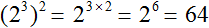
Данное свойство работает по причине того, что 23 это произведение 2 × 2 × 2, которое в свою очередь повторяется два раза. Тогда получается, что основание 2 повторяется шесть раз. Отсюда можно записать, что 2 × 2 × 2 × 2 × 2 × 2 это 26
Вообще, для любого основания a с показателями m и n, выполняется следующее равенство:
(an)m = an × m
Это тождественное преобразование называют возведением степени в степень. Его можно прочитать так: «При возведении степени в степень основание оставляют без изменений, а показатели перемножают».
После перемножения показателей, получится другая степень, значение которой можно найти.
Пример 2. Найти значение выражения (32)2
В данном примере основанием является 3, а числа 2 и 2 являются показателями. Воспользуемся правилом возведения степени в степень. Основание оставим без изменений, а показатели перемножим:
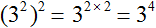
Получили 34. А число 3 в четвёртой степени есть 81
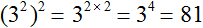
Рассмотрим остальные преобразования.
Умножение степеней
Чтобы перемножить степени, нужно по отдельности вычислить каждую степень, и полученные результаты перемножить.
Например, умножим 22 на 33.
22 это число 4, а 33 это число 27. Перемножаем числа 4 и 27, получаем 108
22 × 33 = 4 × 27 = 108
В этом примере основания степеней были разными. В случае, если основания будут одинаковыми, то можно записать одно основание, а в качестве показателя записать сумму показателей исходных степеней.
Например, умножим 22 на 23
В данном примере основания у степеней одинаковые. В этом случае можно записать одно основание 2 и в качестве показателя записать сумму показателей степеней 22 и 23. Иными словами, основание оставить без изменений, а показатели исходных степеней сложить. Выглядеть это будет так:
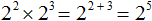
Получили 25. Число 2 в пятой степени есть 32
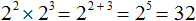
Данное свойство работает по причине того, что 22 это произведение 2 × 2, а 23 это произведение 2 × 2 × 2. Тогда получается произведение из пяти одинаковых множителей, каждый из которых равен 2. Это произведение представимо в виде 25
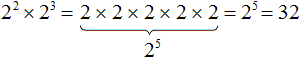
Вообще, для любого a и показателей m и n выполняется следующее равенство:
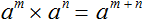
Это тождественное преобразование носит название основного свойства степени. Его можно прочитать так: «При перемножении степеней с одинаковыми основаниями, основание оставляют без изменений, а показатели складывают».
Отметим, что данное преобразование можно применять при любом количестве степеней. Главное, чтобы основание было одинаковым.
Например, найдем значение выражения 21 × 22 × 23. Основание 2 оставим без изменений, а показатели сложим:
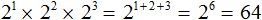
В некоторых задачах достаточным бывает выполнить соответствующее преобразование, не вычисляя итоговую степень. Это конечно же очень удобно, поскольку вычислять большие степени не так-то просто.
Пример 1. Представить в виде степени выражение 58 × 25
В данной задаче нужно сделать так, чтобы вместо выражения 58 × 25 получилась одна степень.
Число 25 можно представить в виде 52. Тогда получим следующее выражение:
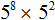
В этом выражении можно применить основное свойство степени — основание 5 оставить без изменений, а показатели 8 и 2 сложить:
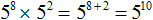
Задачу можно считать решённой, поскольку мы представили выражение 58 × 25 в виде одной степени, а именно в виде степени 510.
Запишем решение покороче:
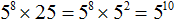
Пример 2. Представить в виде степени выражение 29 × 32
Число 32 можно представить в виде 25. Тогда получим выражение 29 × 25. Далее можно применить основание свойство степени — основание 2 оставить без изменений, а показатели 9 и 5 сложить. В результате получится следующее решение:
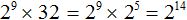
Пример 3. Вычислите произведение 3 × 3, используя основное свойство степени.
Все хорошо знают, что три умножить на три равно девять, но задача требует в ходе решения воспользоваться основным свойством степени. Как это сделать?
Вспоминаем, что если число дано без показателя, то показатель нужно считать равным единице. Стало быть сомножители 3 и 3 можно записать в виде 31 и 31
31 × 31
Теперь воспользуемся основным свойством степени. Основание 3 оставляем без изменений, а показатели 1 и 1 складываем:
31 × 31 = 32
Далее вычисляем значение выражения. Число 3 во второй степени равно числу 9
31 × 31 = 32 = 9
Пример 4. Вычислите произведение 2 × 2 × 32 × 33, используя основное свойство степени.
Произведение 2 × 2 заменим на 21 × 21, затем на 21 + 1, а затем на 22. Произведение 32 × 33 заменим на 32 + 3, а затем на 35
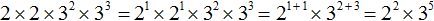
Далее вычисляем значение каждой степени и находим произведение:
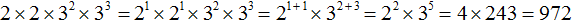
Пример 5. Выполнить умножение x × x
Это два одинаковых буквенных сомножителя с показателями 1. Для наглядности запишем эти показатели. Далее основание x оставим без изменений, а показатели сложим:
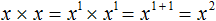
Находясь у доски, не следует записывать перемножение степеней с одинаковыми основаниями так подробно, как это сделано здесь. Такие вычисления нужно выполнять в уме. Подробная запись скорее всего будет раздражать учителя и он снизит за это оценку. Здесь же подробная запись дана, чтобы материал был максимально доступным для понимания.
Решение данного примера желательно записать так:
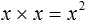
Пример 6. Выполнить умножение x2 × x
Показатель второго сомножителя равен единице. Для наглядности запишем его. Далее основание оставим без изменений, а показатели сложим:
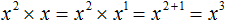
Пример 7. Выполнить умножение y3y2y
Показатель третьего сомножителя равен единице. Для наглядности запишем его. Далее основание оставим без изменений, а показатели сложим:
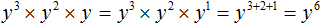
Пример 8. Выполнить умножение aa3a2a5
Показатель первого сомножителя равен единице. Для наглядности запишем его. Далее основание оставим без изменений, а показатели сложим:
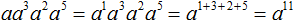
Пример 9. Представить степень 38 в виде произведения степеней с одинаковыми основаниями.
В данной задаче нужно составить произведение степеней, основания которых будут равны 3, и сумма показателей которых будет равна 8. Можно использовать любые показатели. Представим степень 38 в виде произведения степеней 35 и 33
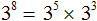
В данном примере мы опять же опирались на основное свойство степени. Ведь выражение 35 × 33 можно записать как 35 + 3, откуда 38.
Конечно можно было представить степень 38 в виде произведения других степеней. Например, в виде 37 × 31, поскольку это произведение тоже равно 38
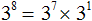
Представление степени в виде произведения степеней с одинаковыми основаниями это по большей части творческая работа. Поэтому не нужно бояться экспериментировать.
Пример 10. Представить степень x12 в виде различных произведений степеней с основаниями x.
Воспользуемся основным свойство степени. Представим x12 в виде произведений с основаниями x, и сумма показателей которых равна 12
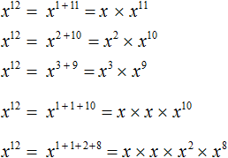
Конструкции с суммами показателей были записаны для наглядности. Чаще всего их можно пропустить. Тогда получится компактное решение:
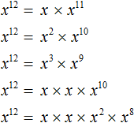
Возведение в степень произведения
Чтобы возвести в степень произведение, нужно возвести в указанную степень каждый множитель этого произведения и перемножить полученные результаты.
Например, возведём во вторую степень произведение 2 × 3. Возьмём в скобки данное произведение и в качестве показателя укажем 2
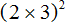
Теперь возведём во вторую степень каждый множитель произведения 2 × 3 и перемножим полученные результаты:
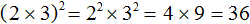
Принцип работы данного правила основан на определении степени, которое было дано в самом начале.
Возвести произведение 2 × 3 во вторую степень означает повторить данное произведение два раза. А если повторить его два раза, то можно получить следующее:
\[2 \times 3 \times 2 \times 3\]
От перестановки мест сомножителей произведение не меняется. Это позволяет сгруппировать одинаковые множители:
\[2 \times 2 \times 3 \times 3\]
Повторяющиеся множители можно заменить на короткие записи — основания с показателями. Произведение 2 × 2 можно заменить на 22, а произведение 3 × 3 можно заменить на 32. Тогда выражение 2 × 2 × 3 × 3 обращается в выражение 22 × 32.
Пусть ab исходное произведение. Чтобы возвести данное произведение в степень n, нужно по отдельности возвести множители a и b в указанную степень n
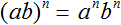
Данное свойство справедливо для любого количества множителей. Следующие выражения также справедливы:
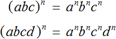
Пример 2. Найти значение выражения (2 × 3 × 4)2
В данном примере нужно возвести во вторую степень произведение 2 × 3 × 4. Чтобы сделать это, нужно возвести во вторую степень каждый множитель этого произведения и перемножить полученные результаты:
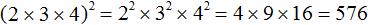
Пример 3. Возвести в третью степень произведение a × b × c
Заключим в скобки данное произведение, и в качестве показателя укажем число 3
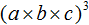
Далее возводим в третью степень каждый множитель данного произведения:
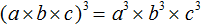
Пример 4. Возвести в третью степень произведение 3xyz
Заключим в скобки данное произведение, и в качестве показателя укажем 3
(3xyz)3
Возведём в третью степень каждый множитель данного произведения:
(3xyz)3 = 33x3y3z3
Число 3 в третьей степени равно числу 27. Остальное оставим без изменений:
(3xyz)3 = 33x3y3z3 = 27x3y3z3
В некоторых примерах умножение степеней с одинаковыми показателями можно заменять на произведение оснований с одним показателем.
Например, вычислим значение выражения 52 × 32. Возведем каждое число во вторую степень и перемножим полученные результаты:
52 × 32 = 25 × 9 = 225
Но можно не вычислять по отдельности каждую степень. Вместо этого, данное произведение степеней можно заменить на произведение с одним показателем (5 × 3)2. Далее вычислить значение в скобках и возвести полученный результат во вторую степень:
52 × 32 = (5 × 3)2 = (15)2 = 225
В данном случае опять же было использовано правило возведения в степень произведения. Ведь, если (a × b)n = an × bn, то an × bn = (a × b)n. То есть левая и правая часть равенства поменялись местами.
Возведение степени в степень
Это преобразование мы рассматривали в качестве примера, когда пытались понять суть тождественных преобразований степеней.
При возведении степени в степень основание оставляют без изменений, а показатели перемножают:
(an)m = an × m
К примеру, выражение (23)2 является возведением степени в степень — два в третьей степени возводится во вторую степень. Чтобы найти значение этого выражения, основание можно оставить без изменений, а показатели перемножить:
(23)2 = 23 × 2 = 26
Далее вычислить степень 26, которая равна 64
(23)2 = 23 × 2 = 26 = 64
Данное правило основано на предыдущих правилах: возведении в степень произведения и основного свойства степени.
Вернёмся к выражению (23)2. Выражение в скобках 23 представляет собой произведение из трёх одинаковых множителей, каждый из которых равен 2. Тогда в выражении (23)2 степень, находящуюся внутри скобок можно заменить на произведение 2 × 2 × 2.
(2 × 2 × 2)2
А это есть возведение в степень произведения, которое мы изучили ранее. Напомним, что для возведения в степень произведения, нужно возвести в указанную степень каждый множитель данного произведения и полученные результаты перемножить:
(2 × 2 × 2)2 = 22 × 22 × 22
Теперь имеем дело с основным свойством степени. Основание оставляем без изменений, а показатели складываем:
(2 × 2 × 2)2 = 22 × 22 × 22 = 22 + 2 + 2 = 26
Как и раньше получили 26. Значение этой степени равно 64
(2 × 2 × 2)2 = 22 × 22 × 22 = 22 + 2 + 2 = 26 = 64
В степень также может возводиться произведение, сомножители которого тоже являются степенями.
Например, найдём значение выражения (22 × 32)3. Здесь показатели каждого множителя нужно умножить на общий показатель 3. Далее найти значение каждой степени и вычислить произведение:
(22 × 32)3 = 22×3 × 32×3 = 26 × 36 = 64 × 729 = 46656
Примерно тоже самое происходит при возведении в степени произведения. Мы говорили, что при возведении в степень произведения, в указанную степень возводится каждый множитель этого произведения.
Например, чтобы возвести произведение 2 × 4 в третью степень, нужно записать следующее выражение:
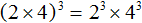
Но ранее было сказано, что если число дано без показателя, то показатель надо считать равным единице. Получается, что множители произведения 2 × 4 изначально имеют показатели равные 1. Значит в третью степень возводилось выражение 21 × 41. А это есть возведение степени в степень.
Перепишем решение с помощью правила возведения степени в степень. У нас должен получиться тот же результат:
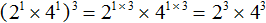
Пример 2. Найти значение выражения (33)2
Основание оставляем без изменений, а показатели перемножаем:
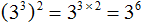
Получили 36. Число 3 в шестой степени есть число 729
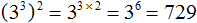
Пример 3. Выполнить возведение в степень в выражении (xy)³
Возведём в третью степень каждый множитель произведения:
Пример 4. Выполнить возведение в степень в выражении (abc)⁵
Возведём в пятую степень каждый множитель произведения:
Пример 5. Выполнить возведение в степень в выражении (−2ax)3
Возведём в третью степень каждый множитель произведения:
Поскольку в третью степень возводилось отрицательное число −2, оно было взято в скобки.
Далее нужно вычислить то, что вычисляется. В данном случае можно вычислить (−2)3 — получится −8. Буквенная часть останется без изменений:
Пример 6. Выполнить возведение в степень в выражении (10xy)2
Пример 7. Выполнить возведение в степень в выражении (−5x)3
Пример 8. Выполнить возведение в степень в выражении (−3y)4
Пример 9. Выполнить возведение в степень в выражении (−2abx)⁴
Пример 10. Упростите выражение x5 × (x2)3
Степень x5 пока оставим без изменений, а в выражении (x2)3 выполним возведение степени в степени:
x5 × (x2)3 = x5 × x2 × 3 = x5 × x6
Теперь выполним умножение x5× x6. Для этого воспользуемся основным свойством степени — основание x оставим без изменений, а показатели сложим:
x5 × (x2)3 = x5 × x2× 3 = x5 × x6 = x5 + 6 = x11
Пример 9. Найти значение выражения 43 × 22, используя основное свойство степени.
Основное свойство степени можно использовать в случае, если основания исходных степеней одинаковы. В данном примере основания разные, поэтому для начала исходное выражение нужно немного видоизменить, а именно сделать так, чтобы основания степеней стали одинаковыми.
Посмотрим внимательно на степень 43. Основание у этой степени есть число 4, которое можно представить в виде 22. Тогда исходное выражение примет вид (22)3 × 22. Выполнив возведение степени в степень в выражении (22)3, мы получим 26. Тогда исходное выражение примет вид 26 × 22, вычислить которое можно, используя основное свойство степени.
Запишем решение данного примера:
Деление степеней
Чтобы выполнить деление степеней, нужно найти значение каждой степени, затем выполнить деление обыкновенных чисел.
Например, разделим 43 на 22.
Вычислим 43, получим 64. Вычислим 22, получим 4. Теперь разделим 64 на 4, получим 16
Если при делении степеней основания окажутся одинаковыми, то основание можно оставить без изменений, а из показателя степени делимого вычесть показатель степени делителя.
Например, найдем значение выражения 23 : 22
Основание 2 оставим без изменений, а из показателя степени делимого вычтем показатель степени делителя:
Значит, значение выражения 23 : 22 равно 2.
Данное свойство основано на умножении степеней с одинаковыми основаниями, или как мы привыкли говорить на основном свойстве степени.
Вернемся к предыдущему примеру 23 : 22. Здесь делимое это 23, а делитель 22.
Разделить одно число на другое означает найти такое число, которое при умножении на делитель даст в результате делимое.
В нашем случае, разделить 23 на 22 означает найти такую степень, которая при умножении на делитель 22 даст в результате 23. А какую степень можно умножить на 22, чтобы получить 23 ? Очевидно, что только степень 21. Из основного свойства степени имеем:
Убедиться, что значение выражения 23 : 22 равно 21 можно непосредственно вычислив само выражение 23 : 22. Для этого сначала найдём значение степени 23, получим 8. Затем найдём значение степени 22, получим 4. Разделим 8 на 4, получим 2 или 21, поскольку 2 = 21.
23 : 22 = 8 : 4 = 2
Таким образом, при делении степеней с одинаковыми основаниями выполняется следующее равенство:
Может случиться и так, что одинаковыми могут оказаться не только основания, но и показатели. В этом случае в ответе получится единица.
Например, найдём значение выражения 22 : 22. Вычислим значение каждой степени и выполним деление получившихся чисел:
При решении примера 22 : 22 также можно применить правило деления степеней с одинаковыми основаниями. В результате получается число в нулевой степени, поскольку разность показателей степеней 22 и 22 равна нулю:
В математике принято считать, что любое число в нулевой степени есть единица:
Почему число 2 в нулевой степени равно единице мы выяснили выше. Если вычислить 22 : 22 обычным методом, не используя правило деления степеней, получится единица.
Пример 2. Найти значение выражения 412 : 410
Воспользуемся правилом деления степеней. Основание 4 оставим без изменений, а из показателя степени делимого вычтем показатель степени делителя:
412 : 410 = 412 − 10 = 42 = 16
Пример 3. Представить частное x3 : x в виде степени с основанием x
Воспользуемся правилом деления степеней. Основание x оставим без изменений, а из показателя степени делимого вычтем показатель степени делителя. Показатель делителя равен единице. Для наглядности запишем его:
Пример 4. Представить частное x3 : x2 в виде степени с основанием x
Воспользуемся правилом деления степеней. Основание x оставим без изменений, а из показателя степени делимого вычтем показатель степени делителя:
Деление степеней можно записывать в виде дроби. Так, предыдущий пример можно записать следующим образом:
Числитель и знаменатель дроби разрешается записывать в развёрнутом виде, а именно в виде произведений одинаковых множителей. Степень x3 можно записать как x × x × x, а степень x2 как x × x. Тогда конструкцию x3 − 2 можно будет пропустить и воспользоваться сокращением дроби. В числителе и в знаменателе можно будет сократить по два множителя x. В результате останется один множитель x
Или ещё короче:
Также, полезно уметь быстро сокращать дроби, состоящие из степеней. Например, дробь можно сократить на x2. Чтобы сократить дробь на x2 нужно числитель и знаменатель дроби разделить на x2
Деление степеней подробно можно не расписывать. Приведённое сокращение можно выполнить короче:
Или ещё короче:
Пример 5. Выполнить деление x12 : x3
Воспользуемся правилом деления степеней. Основание x оставим без изменений, а из показателя степени делимого вычтем показатель степени делителя:
Запишем решение при помощи сокращения дроби. Деление степеней x12 : x3 запишем в виде . Далее сократим данную дробь на x3.
Пример 6. Найти значение выражения
В числителе выполним умножение степеней с одинаковыми основаниями:
Теперь применяем правило деления степеней с одинаковыми основаниями. Основание 7 оставляем без изменений, а из показателя степени делимого вычтем показатель степени делителя:
Завершаем пример, вычислив степень 72
Пример 7. Найти значение выражения
Выполним в числителе возведение степени в степень. Сделать это нужно с выражением (23)4
Теперь выполним в числителе умножение степеней с одинаковыми основаниями:
Теперь применяем правило деления степеней с одинаковыми основаниями:
Значит, значение выражения равно 16
В некоторых примерах можно сокращать одинаковые множители в ходе решения. Это позволяет упростить выражение и само вычисление в целом.
Например, найдём значение выражения . Степень 43 запишем в виде возведения степени в степень (22)3. Тогда получим следующее выражение:
В числителе выполним возведение степени в степень. Сделать это нужно с выражением (22)3
В числителе и в знаменателе получившегося выражения содержится степень 26, которую можно сократить на 26
Видим, что в результате осталась единственная степень 32, значение которой равно 9.
Пример 8. Найти значение выражения
В знаменателе содержится произведение степеней с одинаковыми показателями. Согласно правилу возведения в степень произведения, конструкцию 75 × 45 можно представить в виде степени с одним показателем (7 × 4)5. Далее перемножим выражение в скобках, получим 285. В результате исходное выражение примет следующий вид:
Теперь можно применить правило деления степеней:
Значит, значение выражения равно 28. Запишем решение полностью:
Возведение в степень обыкновенных дробей
Чтобы возвести в степень обыкновенную дробь, нужно возвести в указанную степень числитель и знаменатель этой дроби.
Например, возведём обыкновенную дробь \(\frac{2}{3}\) во вторую степень. Возьмём в скобки данную дробь и в качестве показателя укажем 2
Если не брать в скобки всю дробь, то это равносильно возведению в степень только числителя данной дроби. Иными словами, если мы хотим возвести во вторую степень дробь \(\frac{2}{3}\), мы не должны записывать это как .
Итак, чтобы вычислить значение выражения , нужно возвести во вторую степень числитель и знаменатель данной дроби:
Получили дробь в числителе и в знаменателе которой содержатся степени. Вычислим каждую степень по отдельности
Значит обыкновенная дробь \(\frac{2}{3}\) во второй степени равна дроби .
Приведённое правило работает следующим образом. Дробь \(\frac{2}{3}\) во второй степень это произведение двух дробей, каждая из которых равна \(\frac{2}{3}\)
Мы помним, что для перемножения дробей необходимо перемножить их числители и знаменатели:
А поскольку в числителе и в знаменателе происходит перемножение одинаковых множителей, то выражения 2 × 2 и 3 × 3 можно заменить на 22 и 32 соответственно:
Откуда и получится ответ .
Вообще, для любого a и b ≠ 0 выполняется следующее равенство:
Это тождественное преобразование называют возведением в степень обыкновенной дроби.
Пример 2. Возвести дробь \(\frac{3}{5}\) в третью степень
Заключим данную дробь в скобки и в качестве показателя укажем число 3. Далее возведём числитель и знаменатель данной дроби в третью степень и вычислим получившуюся дробь:
Отрицательная дробь возводится в степень таким же образом, но перед вычислениями надо определиться какой знак будет иметь ответ. Если показатель четный, то ответ будет положительным. Если показатель нечетный, то ответ будет отрицательным.
Например, возведём дробь \(-\frac{1}{2}\) во вторую степень:
Показатель является чётным числом. Значит ответ будет положительным. Далее применяем правило возведения в степень дроби и вычисляем получившуюся дробь:
Ответ положителен по причине того, что выражение представляет собой произведение двух сомножителей, каждый из которых равен дроби \(-\frac{1}{2}\)
А произведение отрицательных чисел (в том числе и рациональных) есть положительное число:
Если возводить дробь \(-\frac{1}{2}\) в третью степень, то ответ будет отрицательным, поскольку в данном случае показатель будет нечётным числом. Правило возведения в степень остаётся тем же, но перед выполнением этого возведения, нужно будет поставить минус:
Здесь ответ отрицателем по причине того, что выражение представляет собой произведение трёх множителей, каждый из которых равен дроби \(-\frac{1}{2}\)
Сначала перемножили \(-\frac{1}{2}\) и \(-\frac{1}{2}\), получили \(\frac{1}{4}\), но затем умножив \(\frac{1}{4}\) на \(-\frac{1}{2}\) мы получим отрицательный ответ \(-\frac{1}{8}\)
Пример 3. Найти значение выражения
Выполним возведение в степень обыкновенной дроби:
Далее вычислим значение получившегося выражения:
Возведение в степень десятичных дробей
При возведении в степень десятичной дроби её необходимо заключить в скобки. Например, возведём во вторую степень десятичную дробь 1,5
Допускается переводить десятичную дробь в обыкновенную и возводить в степень эту обыкновенную дробь. Решим предыдущий пример, переведя десятичную дробь в обыкновенную:
Пример 2. Найти значение степени (−1,5)3
Показатель степени является нечётным числом. Значит ответ будет отрицательным
Пример 3. Найти значение степени (−2,4)2
Показатель степени является чётным числом. Значит ответ будет положительным:
Задания для самостоятельного решения
Показать решение
Показать решение
Показать решение
Показать решение
Показать решение
Показать решение
Показать решение
Показать решение
Показать решение
Показать решение
Показать решение
Показать решение
Показать решение
Показать решение
Показать решение
Показать решение
Показать решение
Показать решение
Показать решение
Показать решение
Показать решение
Показать решение
Показать решение
Показать решение
Показать решение
Показать решение
Показать решение
Показать решение
Показать решение
Показать решение
Показать решение
Показать решение
Показать решение
Показать решение
Показать решение
Показать решение
Показать решение
Показать решение
Показать решение
Показать решение
Показать решение
Показать решение
Показать решение
Показать решение